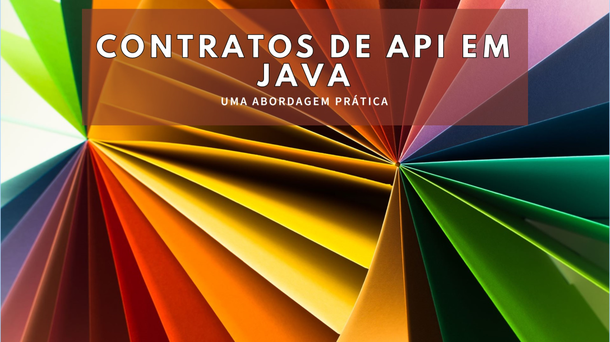
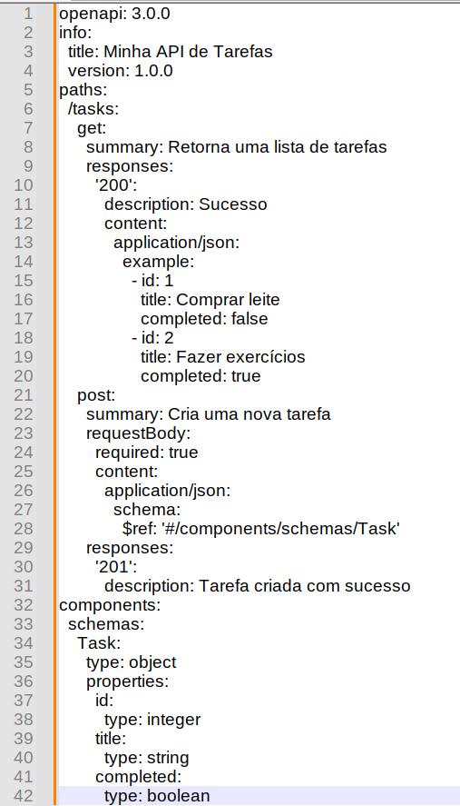

Contratos de API (REST ou SOAP)
Contratos de API: Uma Abordagem Prática em Java

Desenvolvedor Java Sênior na Develcode
23 de junho de 2024
Introdução
Os contratos de API desempenham um papel fundamental no desenvolvimento de sistemas distribuídos e na integração entre diferentes componentes. Eles definem as regras, formatos de dados e comportamentos esperados para a interação entre o provedor e o consumidor da API. Neste artigo, exploraremos a importância dos contratos de API e como implementá-los em Java.
O que são Contratos de API?
Um contrato de API é um acordo formal que especifica como uma API deve ser projetada, implementada e consumida. Ele define os endpoints, métodos, parâmetros, formatos de dados e fluxos de comunicação. Existem várias formas de contratos de API, incluindo:
- Especificação de Interface: Isso pode ser feito usando padrões como o OpenAPI (anteriormente conhecido como Swagger*) ou o RAML* (vide-rodapé). Essas especificações descrevem a API em detalhes, permitindo a geração automática de documentação e código-fonte.
- Contratos Implícitos: Mesmo sem uma especificação formal, os contratos podem ser inferidos a partir do código-fonte da API. Por exemplo, os nomes dos métodos, os parâmetros e os retornos podem servir como contratos implícitos.
Benefícios dos Contratos de API
1. Consistência na Implementação
Um contrato bem definido garante que todos os desenvolvedores sigam as mesmas regras. Isso evita surpresas desagradáveis durante a integração e facilita a manutenção.
2. Geração Automática de Código e Documentação
Com uma especificação de contrato, podemos gerar automaticamente o código-fonte da API e a documentação. Isso economiza tempo e mantém a documentação atualizada.
3. Comunicação Clara entre Equipes
Os contratos reduzem mal-entendidos entre as equipes de desenvolvimento e integração. Todos têm uma visão compartilhada das expectativas e responsabilidades.
REST vs. SOAP: Como o Contrato Influencia a Escolha
- REST (Representational State Transfer) é baseado em princípios simples e usa os métodos HTTP (como GET, POST, PUT e DELETE) para interagir com recursos. Ele é sem estado, o que significa que cada solicitação é independente e não mantém informações de sessão.
- SOAP (Simple Object Access Protocol) , por outro lado, é altamente estruturado e usa XML para definir mensagens. Ele é fortemente acoplado, o que significa que as partes envolvidas precisam entender detalhes específicos da mensagem.
Dentro de uma influência de escolha, o contrato (como o OpenAPI) desempenha um papel crucial na escolha entre REST e SOAP.
Se você precisa de escalabilidade, flexibilidade e suporte a arquiteturas modernas (como micro-serviços), REST é a melhor escolha.
Se você lida com integrações legadas ou precisa de maior integridade de dados (como transações financeiras), o rigoroso contrato do SOAP pode ser mais adequado.
Exemplo de Contrato (REST)
Vamos considerar um exemplo de contrato de API usando o padrão OpenAPI (anteriormente conhecido como Swagger). O OpenAPI é uma especificação que descreve APIs RESTful e permite que desenvolvedores gerem documentação, códigos de cliente e até mesmo testes automatizados.
Podemos ver um exemplo simplificado de um contrato de API usando OpenAPI:

Exemplo de um contrato de OpenAPI.
Neste exemplo:
A rota /tasks tem dois métodos: GET para obter uma lista de tarefas e POST para criar uma nova tarefa.
A resposta 200 para o método GET retorna uma lista de tarefas no formato JSON.
O esquema Task define a estrutura de uma tarefa com propriedades como id, title e completed.
Saibam que um contrato de API pode ser mais complexo, incluindo autenticação, parâmetros de consulta, cabeçalhos e outras informações relevantes para a interação entre o provedor e o consumidor da API.
Conclusão
Os contratos de API são essenciais para o desenvolvimento eficiente e a integração bem-sucedida de sistemas. Ao adotar uma abordagem baseada em contratos, os desenvolvedores podem criar APIs consistentes, documentadas e de alta qualidade em Java e outras linguagens de programação.
Nota:
RAML (RESTful API Modeling Language) é uma linguagem poderosa usada para descrever APIs RESTful de forma legível por humanos. Ela fornece uma maneira estruturada e padronizada de definir APIs, incluindo endpoints, métodos, parâmetros, formatos de solicitação e resposta, entre outros. Com o RAML, você pode projetar, implementar, testar e documentar suas APIs de maneira eficiente, facilitando a colaboração entre equipes de desenvolvimento e garantindo consistência na implementação.
Swagger também é um conjunto de regras (ou seja, uma especificação) para um formato que descreve APIs RESTful. Esse formato é legível tanto por máquinas quanto por humanos. Como resultado, ele também pode ser usado para compartilhar documentação entre gerentes de produto, testadores e desenvolvedores, além de ser aproveitado por várias ferramentas para automatizar processos relacionados a APIs.